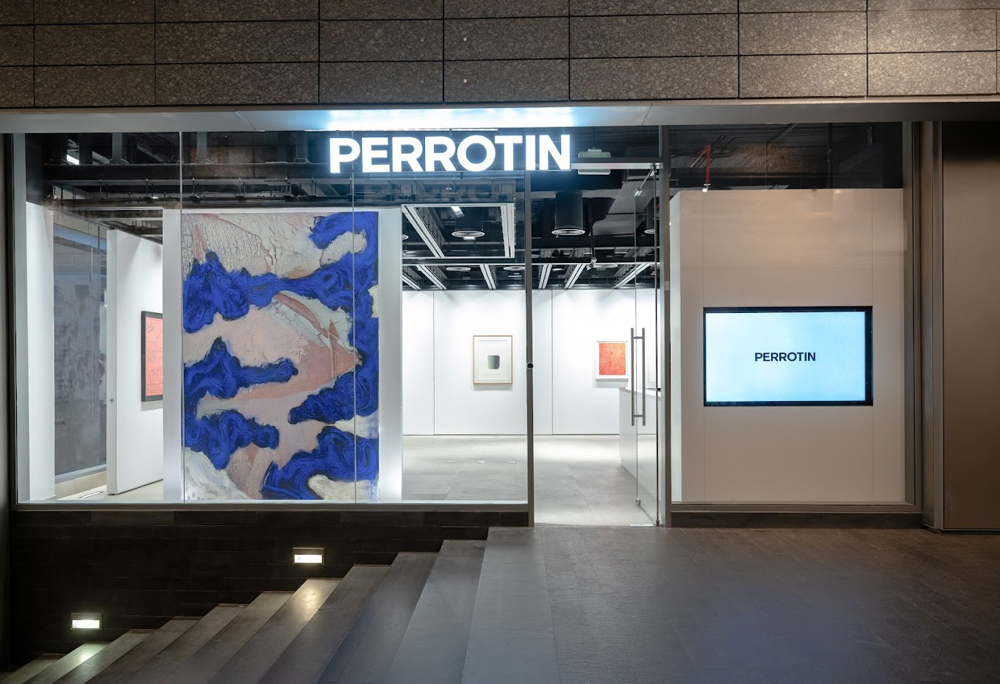

Perrotin Art Gallery :
Here's a summary: :
- Founded in 1990 by Emmanuel Perrotin:
- Perrotin opened his first gallery space in Paris at the young age of 21.
- Global presence:
- Today, Perrotin has a total of 10 exhibition spaces, with 5 in Paris and 1 each in New York, Hong Kong, Seoul, Tokyo, and Shanghai. This expansive footprint translates to a sizable 7,500 square meters of exhibition space.
- Renowned artists:
- The gallery represents a roster of established and respected artists like Maurizio Cattelan, Wim Delvoye, JR, Takashi Murakami, Pierre Soulages, and Claire Tabouret, along with several artist estates.
- Market focus:
- Perrotin operates in both the primary and secondary art markets.
- Active participation:
- The gallery participates in over 20 art fairs annually, solidifying its position in the global art scene.
- Top gallery:
- Perrotin's achievements and influence have earned it a well-deserved spot as one of the biggest art galleries in the world.
Overall, the information provided about Perrotin Gallery aligns with its reputation as a major player in the contemporary art world.
Locations :

Paris Marais
76 rue de Turenne
Paris, 75003
France
www.perrotin.com
+33 142 167 979
Tue - Sat, 11am - 7pm

2Bis Avenue Matignon
Paris, 75008
45-gil
France
www.perrotin.com
+33 142 167 979
Tues - Sat, 11am - 6pm

Dubai
DIFC
Gate Village
Building 5, Unit 1
United Arab Emirates
www.perrotin.com
+971 4 565 50 68

New York
130 Orchard Street
New York, 10002
United Kingdom
United States
www.perrotin.com
+1 212 812 2902
Tues - Sat, 10am - 6pm